Carbohydrates are the polyhydroxy aldehydes or ketones or their derivatives.
They contain C, H and O in the ratio of 1:2:1.
$$\mathrm{C}_n(\mathrm{H}_2\mathrm{O})_n$$
[n = 3 (minimum)]
They are commonly known as sugars.
💡
Biological Importance
They are the main source of energy to human beings-glucose, starch, etc.
They help in cell-cell recognition-the blood groups A, B, O.
They act as lubricants-mucus in the gastrointestinal tract.
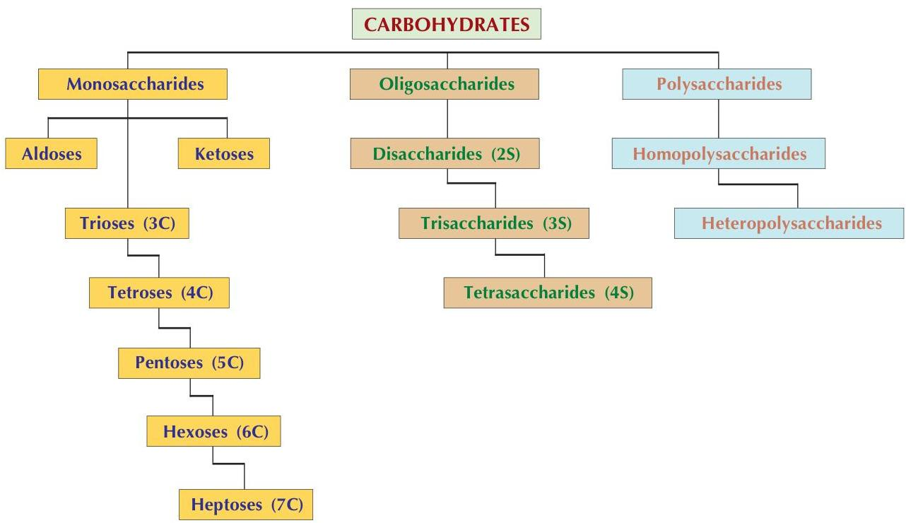
🔍Click to enlarge
Classification of carbohydrates
02
🔹
Monosaccharides
They are the sugar units that cannot be further hydrolyzed into simpler units. There are two major classes of monosaccharides.
Aldoses: Sugars containing an aldehydic group are known as aldoses. e.g., Glucose, galactose, mannose, ribose and glycerose.
Ketoses: Sugars containing a ketonic group are known as ketoses. e.g., Dihydroxyacetone, fructose and seduloheptulose.
Depending upon the number of carbon atoms, aldoses and ketoses are further classified as—
Type
Carbon Atoms
Aldose Sugar
Ketose Sugar
Trioses
3
Glyceraldehyde
Dihydroxyacetone
Tetroses
4
Erythrose
Threose
Pentoses
5
Ribose, Arabinose, Xylose, Lyxose
Ribulose
Hexoses
6
Glucose, Galactose, Mannose
Fructose
Heptoses
7
Sedoheptose
Sedoheptulose
Hexose Structures
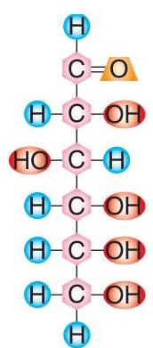
Glucose
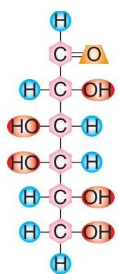
Galactose
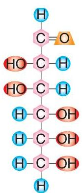
Mannose
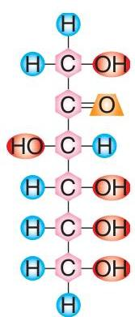
Fructose
03
⚛️
Physical Characters of Monosaccharides
1Asymmetric carbon atom / chiral centre: A carbon atom substituted by four different groups or atoms is known as asymmetric carbon atom. All carbohydrates except dihydroxyacetone have one or more asymmetric carbon atoms.
2Isomers: Two compounds having the same molecular formula but different structural formula are known as isomers. The number of isomers can be calculated from the number of chiral centres $(n)$. The general formula is $2^{n}$. Glucose has four asymmetric carbon atoms, i.e., $n = 4$, so $2^{4} = 16$ isomers are possible for glucose.
(a) Epimers: When sugars differ only in the configuration around one specific carbon atom they are called epimers. e.g., Glucose and mannose are epimers at $\mathrm{C}_2$ whereas glucose and galactose are epimers at $\mathrm{C}_4$.
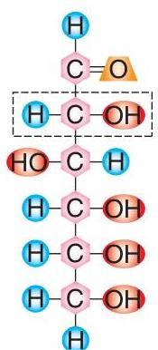
Glucose & Mannose (C2 Epimers)
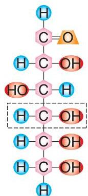
Glucose & Galactose (C4 Epimers)
(b) Enantiomers: Non super-imposable mirror images are known as enantiomers. e.g., D and L sugars.
D series compounds: Contain the reference group on the right side of the last chiral centre from the functional group. Example: D-glucose.
L series compounds: Contain the reference group on the left side of the last chiral centre from the functional group. Example: L-glucose.
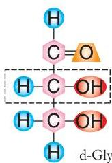
D and L Glyceraldehyde
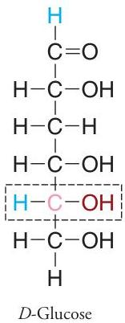
D-Glucose vs L-Glucose
Racemic mixture: A solution containing equal number of $d (+)$ & $l (-)$ forms of a sugar is known as a racemic mixture.
(c) Anomers: Sugars differing at the anomeric carbon atom are known as anomers.
When an aldehydic group (or carbonyl carbon) reacts with an alcoholic group, it results in the formation of a hemiacetal. This creates an additional chiral centre at the 1st carbon atom, now known as the anomeric carbon atom. Two anomers are possible:
Alpha ($\alpha$) anomer: If the $-\mathrm{OH}$ group on the anomeric carbon atom is towards the right.
Beta ($\beta$) anomer: If the $-\mathrm{OH}$ group on the anomeric carbon atom is towards the left.
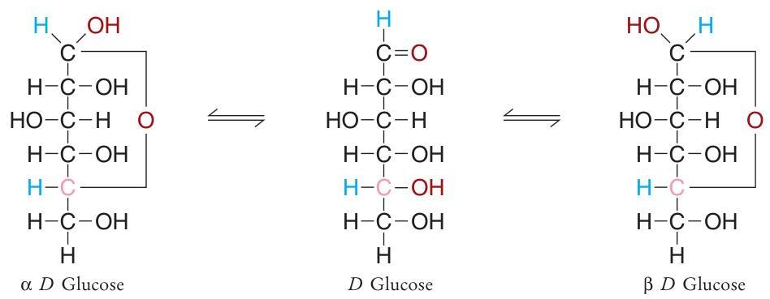
Anomers of Glucose
3Ring structures of carbohydrates:
Furanose ring: If the 1st and the 4th carbon atoms are involved in the hemiacetal formation, the resultant ring structure is a five membered ring that resembles furan.
Pyranose ring: If the 1st and the 5th carbon atoms of the same sugar are involved in the hemiacetal formation, the resultant ring structure is a six membered ring that resembles pyran.
Pentoses always forms the furanose ring structure, whereas hexoses can form both furanose and pyranose ring structures.
4Mutarotation: Change in the specific rotation of an optically active compound without any change in its other properties is known as mutarotation.
Explanation: Glucose crystallized from cold water is $\alpha$-D-glucose and it shows a specific rotation of $(\alpha)_{\mathrm{D}}^{20} = +112.2^{\circ}$. If it is dissolved in water, the specific rotation gradually changes with time and reaches a stable value of $52.7^{\circ}$. This is because $\alpha$-D-glucose isomerizes to $\beta$-D-glucose via a straight chain intermediate. Similarly, $\beta$-D-glucose, obtained from pyridine, shows a specific rotation of $+19^{\circ}$, which gradually changes to $52.7^{\circ}$.
Equilibrium mixture contains: 1/3rd $\alpha$-D-glucose, 2/3rds $\beta$-D-glucose, and a little of straight chain form.
04
🧪
Chemical Reactions of Carbohydrates
1. Reducing action of sugars
In alkaline medium, the aldehydic or ketonic group of sugars can reduce a number of substances (metals) like copper, silver, mercury and bismuth. Copper salts are reduced to cuprous hydroxide or oxide in solution. The sugars are identified in the urine and blood based upon this principle.
Benedict's test
This is a semi quantitative test most commonly used for the detection of the percentage of sugar in urine. It is very specific for glucose or other reducing sugars in urine.
Principle: Cupric ions (hydroxide) in the Benedict's reagent are kept in solution as alkaline citrate complex. When Benedict's reagent is heated with the reducing sugar, the cupric ions are reduced to cuprous ions (oxide), which are less soluble in water, and hence they precipitate out of the alkaline solution as cuprous oxide.
Percentage of reducing sugar (in gm)
Colour of the precipitate
0.5 - 0.9
Green
1.0 - 1.4
Yellow
1.5 - 1.9
Orange
2.0 and above
Brick red
Non-reducing sugars: Sugars that do not have a free aldehydic or ketonic group are called as non-reducing sugars. e.g., sucrose and trehalose.
2. Formation of osazones
Phenylhydrazine reacts with reducing sugars to form osazones. It involves carbonyl carbon and the adjacent carbon. Osazone is a crystalline compound and is used as an identification test for sugars.
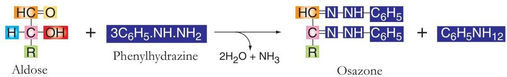
Osazone formation
Fructose and glucose forms a broom stick shaped crystal in 3 and 5 minutes respectively.
Maltose forms star shaped crystals in 20 minutes.
Lactose forms puff shaped crystals in 30 minutes time.
3. Oxidation of sugars
(a) Mild oxidizing agent (Bromine)
Oxidizes the aldehydic group of carbohydrates converting it to an acid group (Aldonic acid).
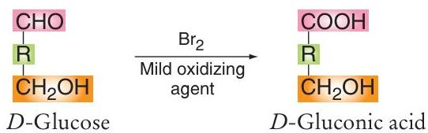
(b) Strong oxidizing agent (Nitric acid)
Oxidizes the primary alcohol of the carbohydrates forming saccharic acids. Galactose forms mucic acid (insoluble), used as an identification test.
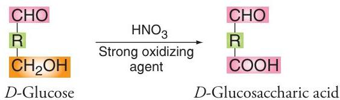
(c) Enzymes
Inside the cell, oxidizes both aldehydic and primary alcoholic groups forming uronic acids (e.g. D-glucuronic acid).
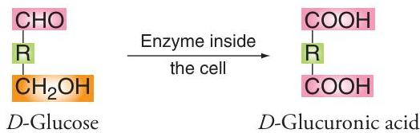
4. Dehydration with strong acids
Concentrated $\mathrm{H}_2\mathrm{SO}_4$ removes the adjacent -OH groups as water $(\mathrm{H}_2\mathrm{O})$ forming furfural from pentoses and hydroxymethyl furfural from hexoses. Furfural condenses with $\alpha$-naphthol in presence of alcohol forming a purple violet coloured complex. This is the principle of Molisch's test which is a common identification test for all carbohydrates.
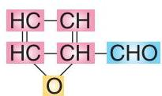
Furfural
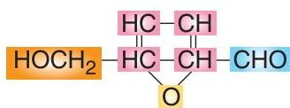
Hydroxymethyl Furfural
5. Derived sugars
(a) Amino sugars: The hydroxyl group at the second carbon of a sugar is replaced by an amino group. e.g., glucosamine, galactosamine.
(b) Deoxy sugars: Formed due to removal of one of the oxygen from the alcoholic group. e.g., 2-Deoxy-ribose (DNA). $L$-fucose is 6-Deoxy $L$-galactose.
(c) Oxidation products: Uronic acids and saccharic acids.
6. Formation of glycosides
When two alcoholic groups react with each other, a glycoside is formed. Carbohydrates contain many alcoholic groups. Hence two carbohydrates can react forming glycosides.
Medically important glycosides:
(i) Digitonin: This is a cardiac glycoside.
(ii) Saponin: A plant glycoside used as an immunostimulating agent.
(iii) Phlorbizin: Also a plant glycoside used in kidney functions.
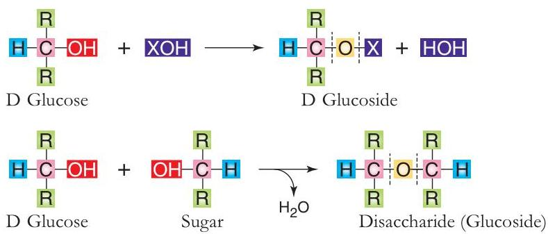
05
🔗
Disaccharides
Sugars containing two monosaccharide units linked by glycosidic bond are known as disaccharides.
1Maltose: It contains two $\alpha$-D-glucose units linked by $\alpha$-1→4 glycosidic linkage. It is also known as malt sugar. It is the product of starch hydrolysis. It is a reducing sugar and forms star shaped osazone crystals.
2Lactose: Made up of $\beta$-D-galactopyrasone and $\alpha$-D-glucopyranose linked through $\beta$-1→4 glycosidic linkage. It is present in milk and hence called milk sugar. It is a reducing sugar and forms puff shaped osazone crystals.
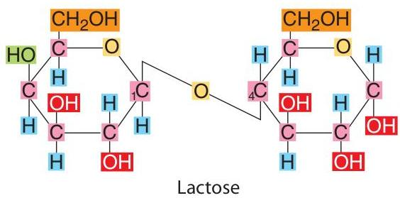
3Sucrose: Contains $\alpha$-D-glycopyranse and $\beta$-D-fructofuranose linked through $\alpha$-1→2 glycosidic linkage. It is the common table sugar (cane sugar). As it is a non-reducing sugar it does not form osazones.
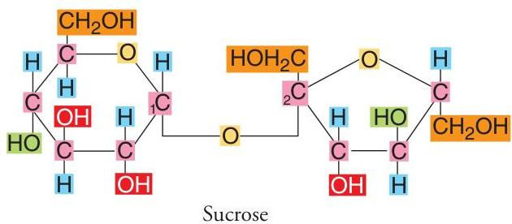
🔄
Invert Sugar
Sucrose is dextrorotatory ($+62.5^{\circ}$). On hydrolysis by sucrase (invertase), it gives a mixture of glucose and fructose. This mixture exhibits a net specific rotation of $-19^{\circ}$ (levorotatory). The phenomenon by which dextrorotatory sugar is converted to a levorotatory sugar is known as invert sugar. Invertase enzyme is used in the preparation of toffees (sweet liquid center).
06
🧱
Polysaccharides
Carbohydrates made up of 10 or more monosaccharide units are called as polysaccharides (glycans).
Homopolysaccharides
Contain only one kind of monosaccharide unit.
Glycogen (Animal Starch): Made up of $\alpha$-D-glucose units linked by $\alpha$-1→4 linkages in the linear and $\alpha$-1→6 linkages at the branching points. It is highly branched. Storage form of energy in liver and muscle. Gives red colour with iodine.
Starch (Glucosan): Made up of $\alpha$-D-glucose units. Composed of Amylose (coiled, unbranched) and Amylopectin (uncoiled, highly branched, $\alpha$-1→4 and $\alpha$-1→6 linkages). Chief carbohydrate in plants. Gives blue colour with iodine.
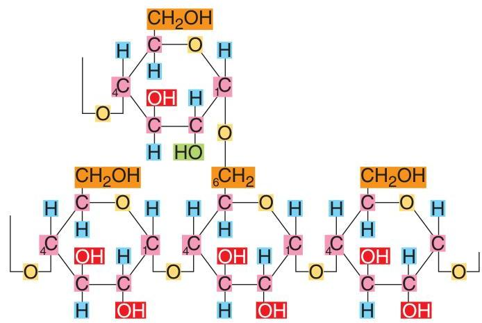
Cellulose: Made up of $\beta$-D-glucose units linked by $\beta$-1→4 glycosidic linkages. Unbranched. Most abundant carbohydrate in nature (plant woods). Indigestible by humans (lack cellulase), serves as fiber.
Dextran: Produced by yeasts/bacteria. $\alpha$-1→6 linkages with branching. Used as plasma substitute.
Inulin: Fructosan. Used to assay G.F.R. (kidney function).
Agar: Sulphated galactose. Used as solidifying agent in tissue culture.
Chitin: $N$-acetylglucosamine units linked by $\beta$-1→4. Exoskeleton of invertebrates.
Heteropolysaccharides
Polysaccharides made up of two or more kinds of monosaccharide units. Also called proteoglycans or mucopolysaccharides.
(a) Pectins
Composed of galacturonic acid, galactose and arabinose.
(b) Mucopolysaccharides
Mucopolysaccharide
Composition
Importance
1. Hyaluronic acid
1. D-Glucuronic acid 2. N-Acetyl-D-glucosamine
Occurs in synovial fluid, skin and vitreous humour.